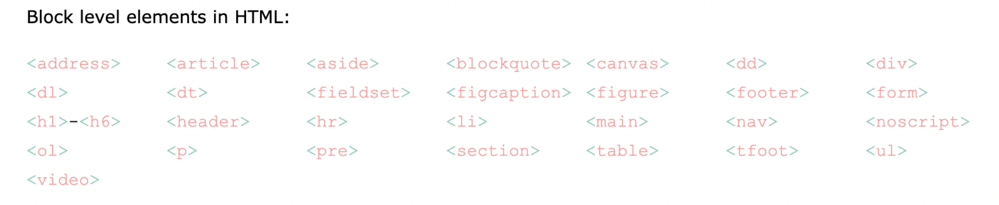
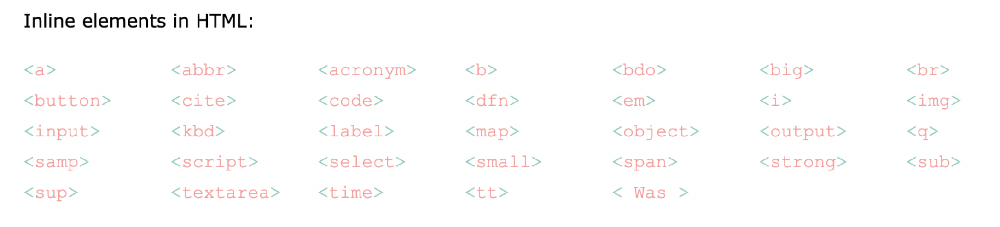
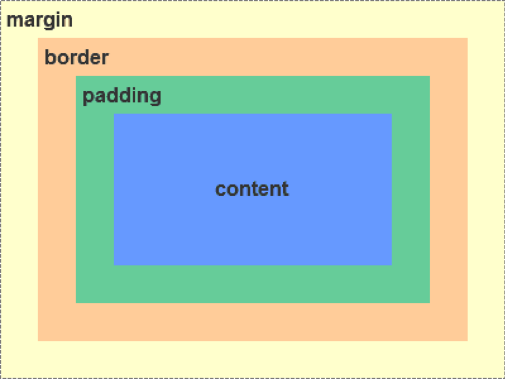
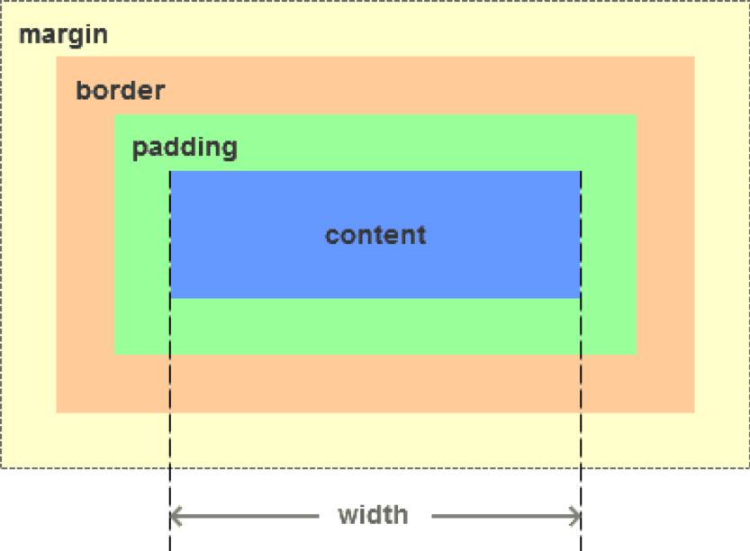
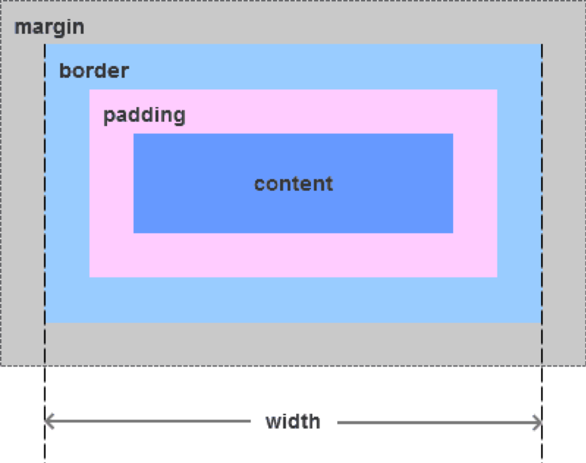
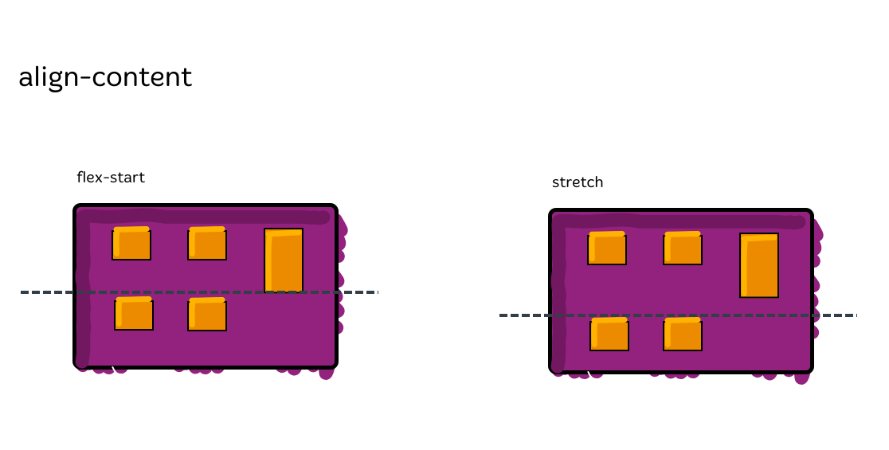
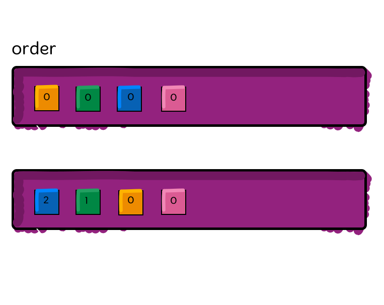
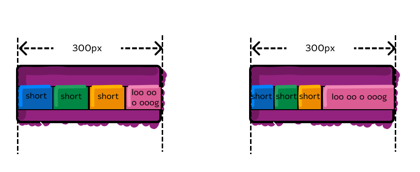
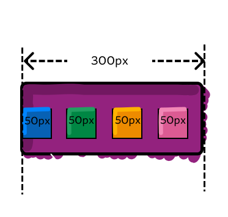

在formal flow中， Block元素默认情况下独占一行， 可设置width和height
CSS
Agenda
元素定位： NORMAL, POSITION, FLOAT
CSS布局： FLEXBOX
块级元素和行内元素
在formal flow中， Inline元素， 不独占一行， 可以与其他元素在同一行， 不可设置width、height、margin-top、margin-bottom等
块级元素与行内元素， 在Display可以相互转化
块级元素 -> 行内元素： display:inline;
行内元素 -> 块级元素： display:block | inline-block;
盒模型BOX-MODEL
盒模型
- 元素内容（content)
- 内边距（padding）
- 边框（border）
- 外边距（margin）
盒模型
盒模型
通过css3新增的属性 box-sizing
设置盒模型为标准模型（content-box）和IE模型（border-box）
两者区别：width和height计算方式的不同
标准模型(content-box)
IE模型(border-box)
BFC - Block Formatting Context
块级格式化上下文
BFC决定了元素如何对其内容进行定位，以及与其兄弟元素之间的相互作用。
BFC的原理（渲染规则)
如何创建BFC
- html根元素；
- float的值不为none；
- position的值不为static或relative；
- overflow不为visible, 即为auto、scroll或者hidden
- display属性为inline-blocks,table,table-cell,table-caption,flex,inline-flex;
定位Position
position属性
- 用来指定一个元素在网页上的位置
- 属性值： static | relative | fixed | absolute | sticky
- 用来指定一个元素在网页上的位置
- 属性值： static | relative | fixed | absolute | sticky
static
- position属性的默认值
- 由浏览器决定每个元素的位置
- 符合"正常的页面流"（normal flow）
- top、bottom、left、right这四个属性无效
relative | fixed | absolute
- 根据参考物来指定偏移的方向和距离
- 必须搭配top、bottom、left、right这四个属性一起使用
relative
- 偏移参考物：相对于默认位置（即static时的位置）
absolute
- 偏移参考物：父元素
fixed
- 偏移参考物：浏览器窗口
sticky
- 它能够形成"动态固定"的效果
- 必须搭配top、bottom、left、right这四个属性一起使用，不能省略, 否则没有动态效果
- Safari 浏览器需要加上浏览器前缀-webkit-
浮动float
标准流排列
例如: div元素，独占一行
float
- 属性值： left | right
- 浮动可以理解为让元素脱离标准流，漂浮在标准流之上，和标准流不是一个层次 Demo1 | Demo2
- 左浮动 vs 右浮动
clear
float引起的问题
float与流体布局
Flexbox

零星小点
长度单位
px: 一个像素
em： 1em=1font-size, 如果em用在的font-size上，则相对于父元素的字号计算
rem: 根据root元素计算
父容器上的属性
.container {
flex-direction: row | row-reverse | column | column-reverse;
}
.container{
flex-wrap: nowrap | wrap | wrap-reverse;
}
nowrap: default 不换行
wrap: 当一行放不下的时候，按照main axis方向自动换行
wrap-reverse: 当一行放不下的时候，按照与main axis相反的方向自动换行

.container { justify-content: flex-start | flex-end | center | space-between | space-around | space-evenly | start | end | left | right ... + safe | unsafe; }
.container { align-items: stretch | flex-start | flex-end | center | baseline | first baseline | last baseline | start | end | self-start | self-end + ... safe | unsafe; }

.container { flex-flow: flex-direction flex-wrap|initial|inherit; }
.container {
align-content: flex-start | flex-end | center | space-between | space-around | space-evenly | stretch | start | end | baseline | first baseline | last baseline + ... safe | unsafe;
}

item上的属性
.item {
order: Integer; /* default is 0 */
}

flex-basis VS flex-grow VS flex-shrink
flex-basis:在剩余空间被分配前，元素的尺寸
flex-grow:存在剩余空间时，剩余空间如何被分配
flex-shrink:当空间不够时，如何压缩元素

flex-basis
auto: 我内容有多大我就占多大剩余空间
0: 不管我有多大，你计算剩余空间的时候都不用考虑我的尺寸
question
0 与 auto的结果有什么不一样？

0 VS auto
参考代码
short
short
short
loo oooooo oooo ooo oooo oog
.container {
display: flex;
height: 120px;
width: 300px;
border: solid 1px gray;
align-items: center;
}
.item {
height: 50px;
flex: 1 1;
flex-basis: auto
;
}
.blue {
background: blue;
}
.green {
background: green;
}
.orange {
background: orange;
}
.pink {
background: pink;
}
flex-grow
默认值为0，不grow
question
grow 设为1，每个item的宽度是多少呢？
flex-shrink
默认值为1，shrink
question
每个item的宽度是多少呢？


.item {
align-self: auto | flex-start | flex-end | center | baseline | stretch;
}

Note that float, clear and vertical-align have no effect on a flex item.